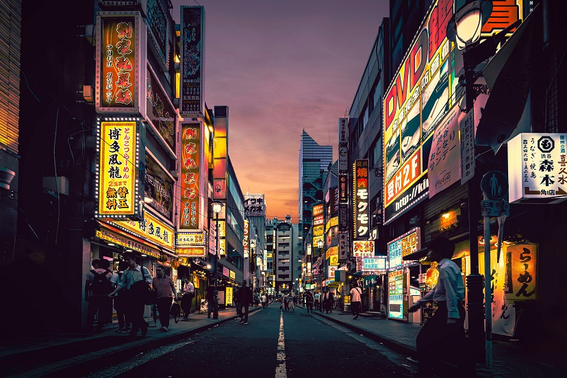

<!DOCTYPE html>
<html lang="en">

    <head>
        <meta charset="UTF-8">
        <meta name="viewport" content="width=device-width, initial-scale=1.0">
        <title>Responsive Content - Images</title>
        <style>
            img {
                width: 100%;
            }

            #hero {
                width: 600px;
                height: 400px;
                background-image: url("tokyo-2048w.jpg");
            }

            @media screen and (max-width: 1024px) {
                #hero {
                    background-image: url("tokyo-1024w.jpg");
                }
            }

            @media screen and (max-width: 768px) {
                #hero {
                    background-image: url("tokyo-768w.jpg");
                }
            }

            @media screen and (max-width: 414px) {
                #hero {
                    background-image: url("tokyo-414w.jpg");
                }
            }

            @media only screen and (min-resolution: 2dppx) and (max-width: 414px) {

                #hero {
                    background-image: url("tokyo-414w@2.jpg");
                }
            }

            @media only screen and (min-resolution: 3dppx) and (max-width: 414px) {

                #hero {
                    background-image: url("tokyo-414w@3.jpg");
                }
            }
        </style>
    </head>

    <body>

        <!---->


        <!---->

        <picture>
            <source srcset="tokyo-414w.jpg" media="(max-width: 414px)">
            <source srcset="tokyo-768w.jpg" media="(max-width: 768px)">
            <source srcset="tokyo-1024w.jpg" media="(max-width: 1024px)">
            <source srcset="tokyo-2048w.jpg" media="(max-width: 2048px)">
            
        </picture>

    </body>

</html>